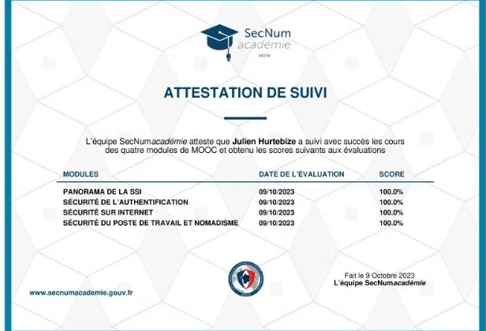

Identifier les types d'attaques et concevoir les défenses adaptées.
Niveau 3- Ce que j'ai fait
- Dans la SAÉ 4.Cyber.01, j'ai conçu et durci une infrastructure multi-sites puis évalué sa résistance face à plusieurs scénarios offensifs : SYN scan avec Nmap, spoofing ARP dans Wireshark, brute-force SSH avec Hydra. La conformité atteinte par rapport aux 79 recommandations ANSSI de sécurité réseau a dépassé 50 %. Côté défense : Bind9 + DNSSEC, UFW, Fail2Ban, ARPwatch. Sur la SAÉ 5.01, l'AC s'est exprimé en mode défense en profondeur : Pod Security Standards restricted, NetworkPolicy
deny-all, RBAC fin, secrets externalisés. - Pourquoi
- La sécurité d'un SI ne se mesure pas seulement à ce qu'on a mis en place, mais à ce qu'on est capable de tester soi-même. Un audit reste théorique tant qu'on n'a pas confronté l'infrastructure à des techniques offensives réelles. C'est précisément la philosophie ANSSI et celle du pentesting (R3.Cyber.16 notée 17,00).
- Comment
- Méthode inspirée des standards : reconnaissance Nmap, énumération avec gobuster sur le web et enum4linux sur SMB, exploitation selon le scénario (Hydra pour SSH, scapy pour ARP, Wireshark pour la capture). Pour chaque vulnérabilité confirmée, application immédiate d'une contre-mesure et passage en revue des 79 recommandations ANSSI avec marquage des items appliqués.
- Mes difficultés
- La note de 12 sur la SAÉ 4.Cyber.01 reflète une exécution perfectible. La principale difficulté a été de maintenir la cohérence entre les couches de défense : durcir un service sans casser un autre, ouvrir un port pour un test sans laisser une porte ouverte. Le risque de l'empilement, c'est l'effet « passoire avec rustines ». La cryptographie (R4.Cyber.10 à 8,25) m'a aussi posé problème : le formalisme algébrique sous-jacent est hors de mes appétences. Je l'assume : je ne suis pas un futur cryptanalyste.
- Ce que j'en ai appris
- La sécurité est un processus, pas un état : un système n'est jamais « sécurisé » à l'instant T mais l'est en permanence par mises à jour, supervision et réévaluation. La défense en profondeur a un coût opérationnel : trop de couches compliquent le diagnostic. Le référentiel ANSSI est un excellent point d'ancrage pour les PME qui n'ont pas les moyens de définir leur politique ex nihilo.
- Ce que je ferais autrement
- Documenter une matrice de menaces (STRIDE ou EBIOS RM simplifié) avant les contre-mesures, pour que chaque mesure réponde à un risque identifié et pas à un réflexe. Mettre en place une supervision active (logs centralisés, alertes sur échecs d'authentification) dès la fin du durcissement. Automatiser les tests de régression sécurité.
